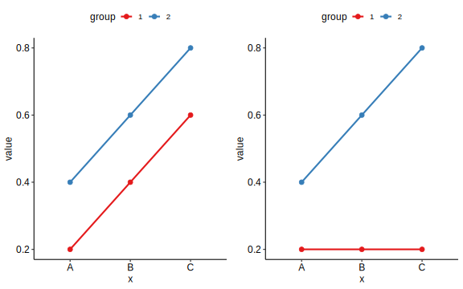
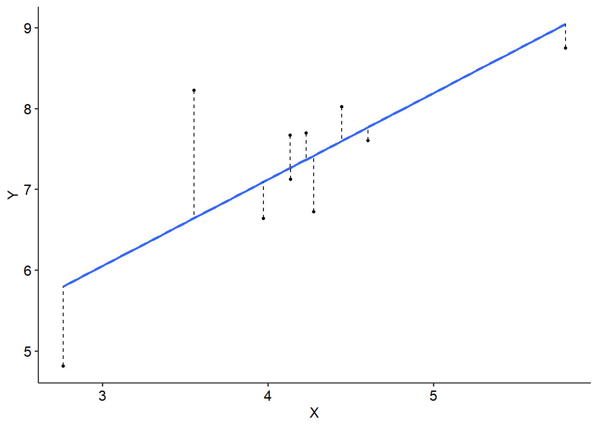

9.2 Interactions
9.2.1 What is an interaction?
Pretend you’ve been enacting a singing intervention in a school of kids, where one group of kids have been singing daily and another group have not been. You’re interested in whether the singing intervention has an effect on their wellbeing. By and large, the singing intervention does - there is a clear difference between the kids who get singing sessions and kids who don’t. However, you notice that how effective the intervention is depends on whether they are boys or girls. The girls appear to benefit the most, while the boys don’t seem to as much. In other words, the effectiveness of the intervention is contingent on the biological sex of the child.
This is an example of an interaction, where the effect of one IV depends on the effect of another IV. The consequence of an interaction is that the two IVs both influence the DV together (in a non-additive manner). Interactions can be important for understanding how certain phenomena work.
Consider the two plots below, that show the relationship between two predictors (X and Group) and one outcome (on the y-axis).
- In the graph on the left, there is a clear difference between groups 1 and 2. There is also a clear difference between A, B and C on X; however, this is constant.
- In the graph on the right, there’s still a clear difference between groups 1 and 2. However, the difference is greater between different groups. For group 1, there is no change from A to C, but there is for group 2; in other words, the effect of X depends on the effect of Group.

The easiest way of demonstrating an interaction is by using an interaction plot, like the one above. This kind of graph plots means as dots, and joins different groups/IVs together by lines. Interaction plots with error bars (e.g. +/- 1 standard error) provide the clearest way of graphing of an interaction effect.
9.2.2 Testing for interactions
We can test for interactions when we have at least two independent variables/predictors, using both ANOVAs and regressions. The majority of this module will focus on instances with two predictors in an ANOVA context, as they are easiest to conceptualise.
By default, if we have two predictors - A, and B, and an outcome, Y - our model will have the following terms:
- A, or the main effect of A (i.e. of A only)
- B, the other main effect
- A x B, which is our interaction effect
Therefore, we end up with two types of effects that we need to interpret: main effects, and interaction effects. An interaction effect is what we call a higher-order term, in that it is a more complex term in our model. We test the significance of each term, giving us three p-values and sets of test statistics.
Here’s an example of a two-way ANOVA with a significant interaction. Notice that there are three effects here: one for gender, one for education and the gender x education level interaction. (We’ll go through how to run these models a bit later.)
## Df Sum Sq Mean Sq F value Pr(>F)
## gender 1 0.54 0.54 1.787 0.18709
## education_level 2 113.68 56.84 187.892 < 2e-16 ***
## gender:education_level 2 4.44 2.22 7.338 0.00156 **
## Residuals 52 15.73 0.30
## ---
## Signif. codes: 0 '***' 0.001 '**' 0.01 '*' 0.05 '.' 0.1 ' ' 1## Anova Table (Type 3 tests)
##
## Response: score
## Effect df MSE F pes p.value
## 1 gender 1, 52 0.30 0.59 .011 .448
## 2 education_level 2, 52 0.30 189.17 *** .879 <.001
## 3 gender:education_level 2, 52 0.30 7.34 ** .220 .002
## ---
## Signif. codes: 0 '***' 0.001 '**' 0.01 '*' 0.05 '+' 0.1 ' ' 1How do we interpret this? Clearly, we have no main effect of gender (p = .448) but we do have an effect of education level (p < .001). We also have a significant interaction term: gender x education (p = .002).
Here is where something called the principle of marginality kicks in. The principle of marginality, states that if two variables interact with each other, the main effects of each variable are marginal to their interaction. In more simple terms, this means that a significant interaction is a better explanation of the main effects than the main effects themselves. In context, this means that the significant effect of education level is actually best explained by decomposing the gender x education level interaction. Therefore, if you have a significant interaction you want to break this down first. If the interaction is not significant, you can run post-hocs on the main effects only.
But like a regular ANOVA, this only tells us that there is an interaction. How do we find out which means are different?
9.2.3 Simple effects tests
One option is to conduct post-hoc tests like normal, and run post-hocs on the interaction term. But this is not necessarily meaningful:
## Tukey multiple comparisons of means
## 95% family-wise confidence level
##
## Fit: aov(formula = tmp_formula, data = dat.ret, contrasts = contrasts)
##
## $gender
## diff lwr upr p adj
## male-female 0.1932143 -0.09680436 0.4832329 0.1870895
##
## $education_level
## diff lwr upr p adj
## school-college -0.7573684 -1.187898 -0.3268386 0.0002637
## university-college 2.4944417 2.069328 2.9195559 0.0000000
## university-school 3.2518102 2.826696 3.6769243 0.0000000
##
## $`gender:education_level`
## diff lwr upr p adj
## male:college-female:college -0.2396667 -0.9873581 0.508024749 0.9317495
## female:school-female:college -0.7220000 -1.4497494 0.005749384 0.0529764
## male:school-female:college -1.0363333 -1.7840247 -0.288641918 0.0019203
## female:university-female:college 1.9430000 1.2152506 2.670749384 0.0000000
## male:university-female:college 2.8290000 2.1012506 3.556749384 0.0000000
## female:school-male:college -0.4823333 -1.2300247 0.265358082 0.4086560
## male:school-male:college -0.7966667 -1.5637819 -0.029551460 0.0374890
## female:university-male:college 2.1826667 1.4349753 2.930358082 0.0000000
## male:university-male:college 3.0686667 2.3209753 3.816358082 0.0000000
## male:school-female:school -0.3143333 -1.0620247 0.433358082 0.8132166
## female:university-female:school 2.6650000 1.9372506 3.392749384 0.0000000
## male:university-female:school 3.5510000 2.8232506 4.278749384 0.0000000
## female:university-male:school 2.9793333 2.2316419 3.727024749 0.0000000
## male:university-male:school 3.8653333 3.1176419 4.613024749 0.0000000
## male:university-female:university 0.8860000 0.1582506 1.613749384 0.0087499A more targeted approach is to conduct simple effects tests. Simple effects tests are a form of pairwise comparisons that are run to break down an interaction. It involves running pairwise comparisons between one predictor at every level of the other predictor.
Using the example above, this might include running pairwise comparisons between education levels for males and females separately:
## gender = female:
## contrast estimate SE df t.ratio p.value
## college - school 0.722 0.246 52 2.935 0.0050
## college - university -1.943 0.246 52 -7.899 <.0001
## school - university -2.665 0.246 52 -10.834 <.0001
##
## gender = male:
## contrast estimate SE df t.ratio p.value
## college - school 0.797 0.259 52 3.073 0.0034
## college - university -3.069 0.253 52 -12.143 <.0001
## school - university -3.865 0.253 52 -15.295 <.0001Or, to spin it the other way, you might compare males and females for each education level separately:
## education_level = college:
## contrast estimate SE df t.ratio p.value
## female - male 0.240 0.253 52 0.948 0.3473
##
## education_level = school:
## contrast estimate SE df t.ratio p.value
## female - male 0.314 0.253 52 1.244 0.2191
##
## education_level = university:
## contrast estimate SE df t.ratio p.value
## female - male -0.886 0.246 52 -3.602 0.0007Generally, it is wise to run simple effects tests both ways - as this decomposes the interaction into something that is interpretable. This is usually guided by theoretical reasons (i.e. a hypothesis about which simple effects to run). Of course, a good graph will tell the rest of the story:
jobsat %>%
mutate(
education_level = factor(education_level, levels = c("school", "college", "university")),
gender = factor(gender, levels = c("male", "female"))
) %>%
group_by(gender, education_level) %>%
summarise(
mean = mean(score),
sd = sd(score),
se = sd/sqrt(nrow(jobsat))
) %>%
ungroup() %>%
ggplot(
aes(x = education_level, y = mean, colour = gender, group = gender)
) +
geom_point(size = 1.5) +
geom_line(size = 1) +
geom_errorbar(
aes(
ymin = mean - 1.96*se,
ymax = mean + 1.96*se
), width = 0.2) +
scale_colour_brewer(palette = "Set2") +
labs(
x = "Education level", y = "Score", colour = "Gender"
)## `summarise()` has grouped output by 'gender'. You can override
## using the `.groups` argument.